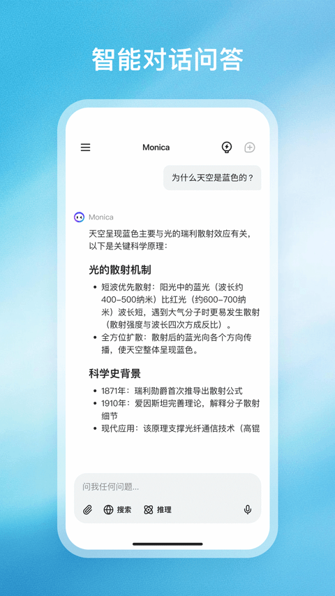
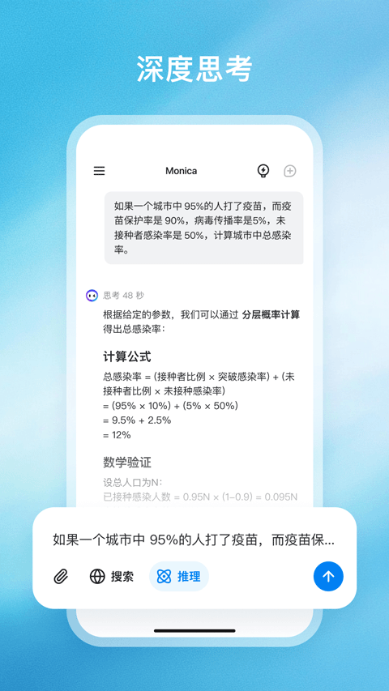

Monica 避坑指南：看着全能，这四个地方容易翻车
Monica 聚合了多家模型，功能面很广，但几个使用细节如果没摸透，轻则白花积分、重则数据隐私出问题。本文挑四个真实踩过的坑，逐个讲清症状、原因和解法。
Monica 刚上手给我的印象是"一站式"——去官网上看一眼，AI 搜索、对话、写作、生图、PDF 翻译、Agent 自动化……几乎能想到的 AI 应用都给你塞在同一个壳里。界面也做的清爽，点进去就想直接开用。
但用了两三周之后我发现，越是这种"全家桶"形态的工具，越容易在角落里藏着几个反直觉的设计。我前前后后踩过至少四个坑，其中一个还差点把我私人聊天记录忘在上面。写下来给同样在摸索的朋友提个醒。
坑一：对话中途切模型，以为之前的回答会重生成
症状：一个聊到一半的对话，我觉得 GPT-4o 的回答太啰嗦，想切到 Claude 来收个尾。切完之后往下看，之前 GPT 说的那一大段还好好挂在对话里——我以为会自动刷新，结果什么都没发生。

原因：Monica 的模型切换机制是"只对后续回答生效"。已经生成出来的内容不会因为你切了模型就重跑——每条消息都是在切模型那一刻之前的上下文里由对应模型独立生成的，切换操作只是告诉服务端"接下来这轮对话的回答换个模型来出"。
这不是 bug，是设计选择。但它非常反直觉，因为大部分人对"切换"的预期是"用新模型重新来过"。
解法：切换模型之后，想让新模型基于当前上下文重答一遍之前的问题，有两条路：要么手动点那条消息右上角的「重新回答」按钮（Monica 有这个功能，大多数人没注意到）；要么直接把你不满意的那条回答对应的问题删掉重写一遍，新模型就会接过来跑了。
一个经验法则：切模型 ≠ 重置对话。如果你的目标是让新模型完整地审视一遍整个对话链，最好新开一个对话窗口，把上下文复制过去。
坑二：记忆功能开了之后忘关，私人信息跨对话泄露
症状：某天我在一个闲聊对话里随口提了一句"我的房贷每月大概 8000"，然后去另一个对话里问"帮我写一篇关于租房和买房的文章"，Monica 的回答里居然主动把"你提到过的房贷压力"当成论据用了。当时我后背一凉。
原因：Monica 的记忆功能是跨对话的。一旦你打开它（默认其实是关闭的，但第一次"个性化推荐"弹窗时容易误点开启），Monica 就会把你在任意对话里说过的敏感信息存进"记忆库"，后面不管哪个对话，只要上下文沾边，它都会主动引用。
记忆本身是加密存储的，不会泄露给第三方——这点monica文档里写得很清楚。问题在于你自己可能忘了开过这个开关。

解法：三条：
- 第一次打开 App 看到"开启个性化记忆"弹窗时，先想清楚：你平时会不会在里面聊私事？如果会，直接跳过；
- 养成一个月去一次记忆管理页的习惯，把自动收录的碎片信息逐条过一遍，不需要的就删；
- 最彻底的做法：长期保持记忆关闭，只在需要特定个性化服务（比如"记住我喜欢的写作风格"）时临时开启，用完立刻关。
坑三：免费额度和高级积分，傻傻分不清结果把积分烧光
症状：我从monica下载装完 App 之后，看到它宣称"每天有免费额度可以免费用"，就放心大胆地用 DeepSeek 免费通道聊天。结果某天突然被提示"积分不足"，我一脸懵——我没开会员啊，哪来的积分消耗？
原因：免费额度和高级积分是两套独立系统。免费额度（每日刷新）只能跑特定的免费模型，比如 DeepSeek 的那个专门通道。但一旦你切到需要"高级积分"的模型（比如 GPT-4o、Claude 3.5 Sonnet 的某些高级模式），消耗的就是积分类——而积分是会员权益，用完就没，不会每天刷新。
更隐蔽的地方在 AI 搜索：搜索本身不消耗积分，但如果你让它用"深度思考"模式来推理，积分会快速往下掉。我那次就是聊天窗口里 DeepSeek 免费通道切去 AI 搜索时点了深度思考，自己没注意，积分一下烧完。
解法：每次操作前先看一下当前选中的模型在界面上标的是"免费"还是"积分"。积分消耗会实时显示在回答上方，别等出了账单才发现。
一个实用小技巧：先开对话、后选模型。先跟免费模型聊清楚需求，确认没问题了再切付费模型来做最终输出——这样可以把付费模型的使用量压到最低。
坑四：AI 搜索带来源，但来源太少就信了
症状：用 Monica 的 AI 搜索查一个技术问题，回答里标注"参考了 3 个来源"，我就觉得挺靠谱，直接抄进了技术笔记。后来发现那 3 个来源里有两个其实是同一个博客的不同页面，信息重复还带了错误。
原因：Monica 的 AI 搜索是把问题拆成关键词后去多个网页源抓取，但"来源数量"只是它抓取的页面数，不代表独立信息源数量。一个域名下的不同页面会被算成多个来源——而那些被抓取到的页面之间，可能互相引用、错误同源。
解法：
- 看到答案里的来源数时，点开详情页逐个扫一下域名——如果两个来源域名相同或高度相似，当成一个用；
- 关键问题别只看 Monica 的整合回答，至少手动打开其中一两个来源核对原文；
- 如果 Monica 的答案让你觉得"太顺了不像人话"，直接切到搜索增强模式，让它把抓取到的原始片段一并列出来对照。
防坑清单
- 切模型 ≠ 重置对话，需要重答时手动点「重新回答」或删问题重写
- 记忆功能默认关就别动，定期检查记忆管理页，不需要的及时删
- 每次操作前确认当前模型是"免费"还是"积分"，积分不刷新省着用
- AI 搜索的来源数是页面数不是独立源，关键信息手动点开来核对
- 对话里别随口说私人信息，哪怕是在"一次性临时对话"里也长点心
写这篇的时候我也在想——Monica 作为一个聚合型产品，它踩的坑本质上都是"功能太多带来的默认设置陷阱"。只要摸清楚这几个反直觉的点，平时用着其实相当省心。毕竟你也不会天天在一个 App 里同时做搜索、写论文、修图和查房贷，对吧？
这套 Monica 的完整资料（安装指引、功能详解、FAQ）同步维护在GitHub、Gitee、GitCode 三个仓库里，搜索 "Monica" 就能找到对应目录，内容保持一致。